par son père : 2021 avec Crowned Dream Kacey, 2022 avec Crowned Dream Kacey, 2022 avec Sanae, 2022 avec Crowned Dream Lizz


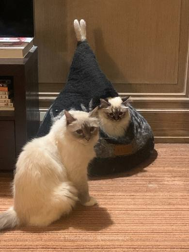

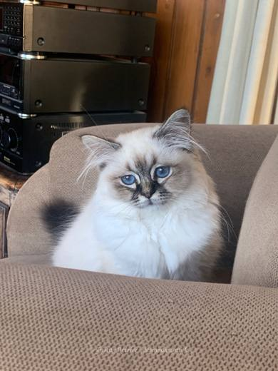

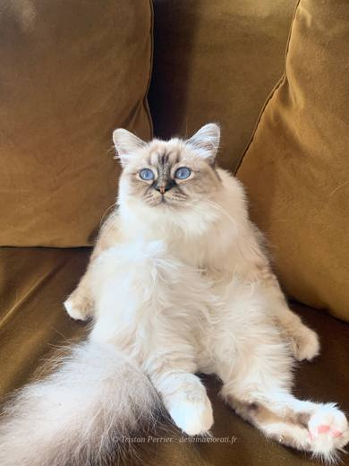

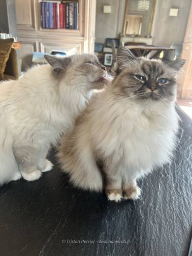

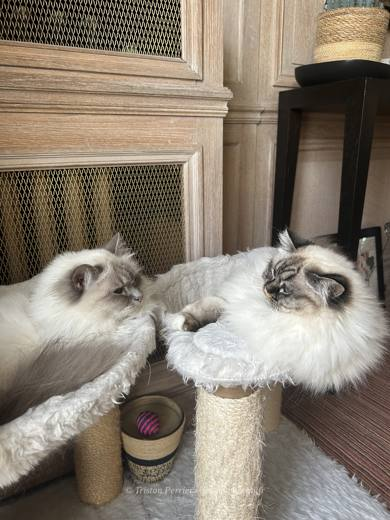

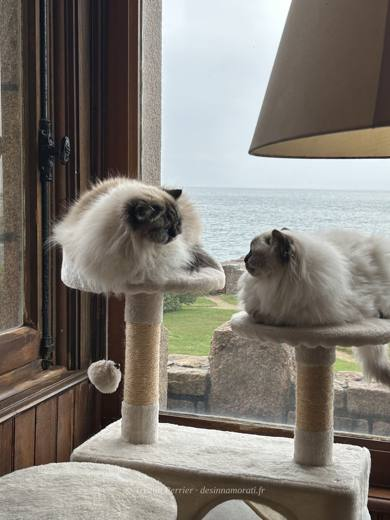

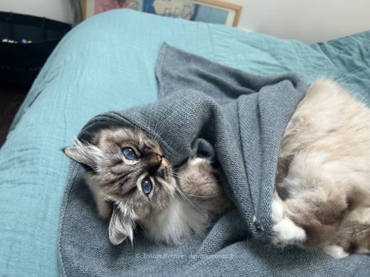

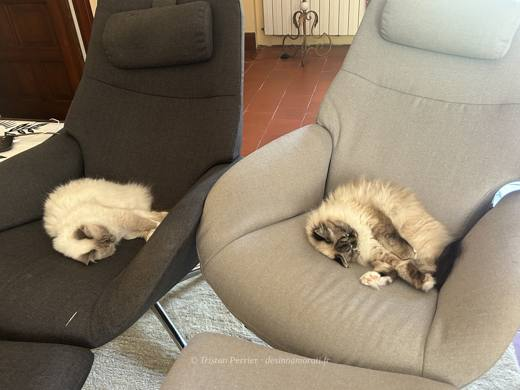

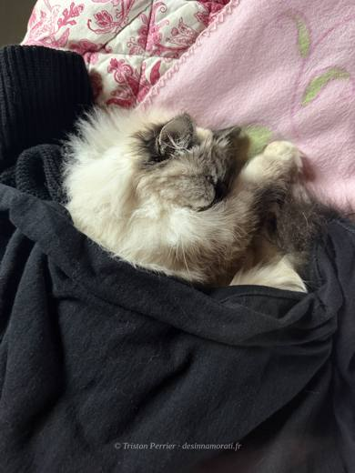

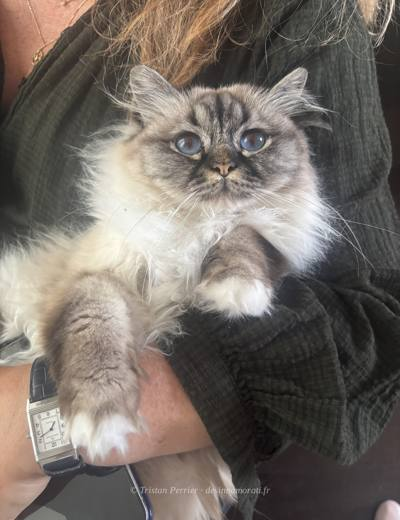

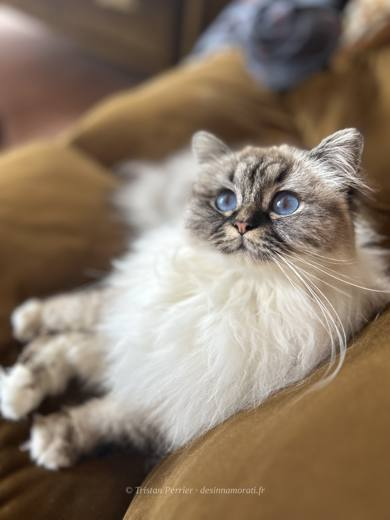

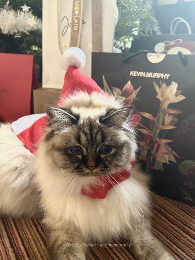

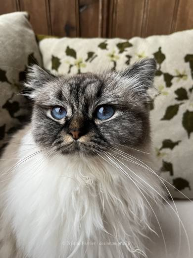

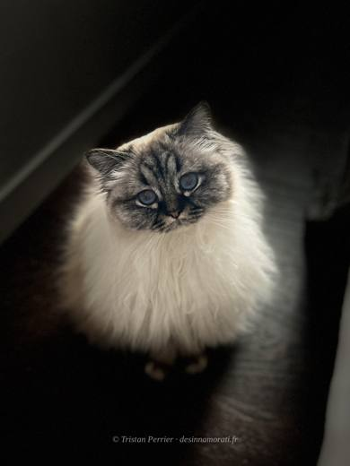

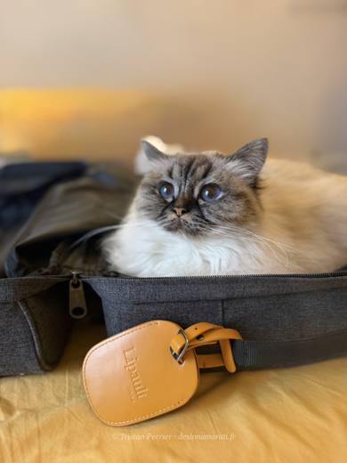

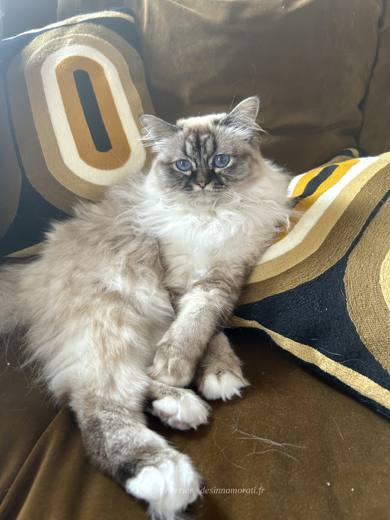

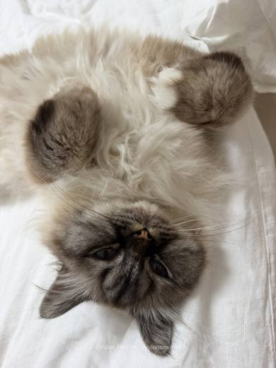

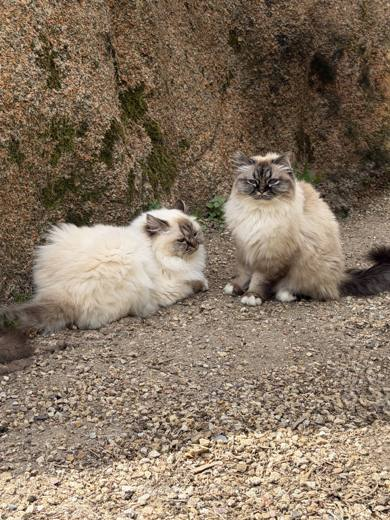

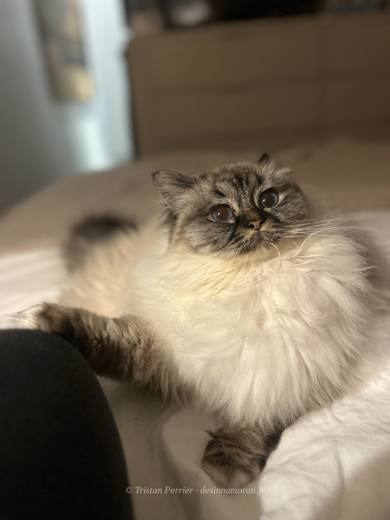

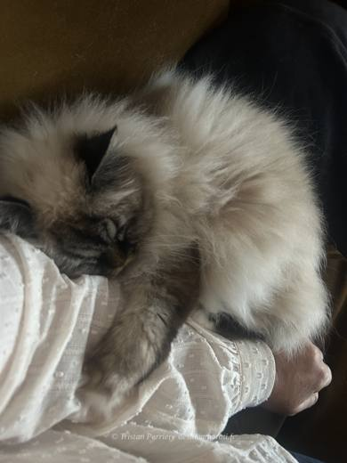

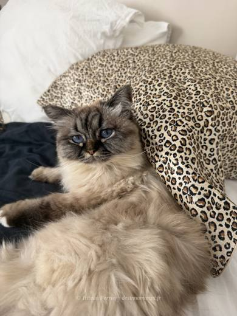

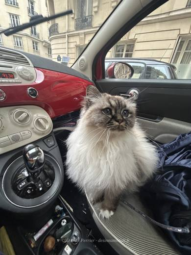
Le mot de sa famille
Tia, racontée par les siens
Tia est LE chat dont je rêvais : d’une tendresse incroyable, elle a tout de suite été adoptée par mon autre sacré de Birmanie. C’est un bonheur de les regarder vivre toutes les 2. Tia est très très câline, toujours disponible pour les bisous. Elle aime juste être avec nous et a besoin de compagnie et d’attention. Elle n’hésite pas à nous « parler », ce qui nous fait beaucoup rire. Bref, c’est mon bébé !
Sur notre élevageAdopter un Innamorati, c’est entrer dans la super famille de Magali et Tristan… et y rester ! Toujours disponibles pour tout conseil, ils sont bien souvent plus efficaces que les vétérinaires. Nous avons 3 chats de chez eux, tous des amours qui font notre bonheur. Je les en remercie chaque jour depuis 5 ans.
Vous êtes sa famille ?
Racontez-nous Tia
Son caractère, ses petites manies, ce que vous aimez chez Tia, et quelques mots sur votre expérience avec notre élevage : nous les ajouterons à cette page, avec votre prénom seulement.
Pour les photos, envoyez-nous vos plus belles par e-mail ou par l’application Messages de l’iPhone : WhatsApp les compresse et elles perdent en qualité.
Photos réduites et marquées. Elles appartiennent à la Chatterie des Innamorati et ne peuvent pas être reprises dans une annonce.